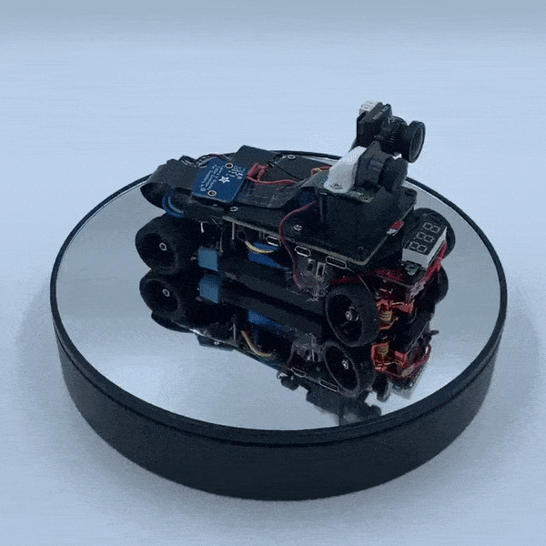

Multi-Agent Autonomous Cars for High-Speed, Indoor Environments
Introduction
One of the most pressing challenges within autonomous mobility lies within highway scenarios: where autonomous vehicles would be interacting with human drivers at high speeds. These scenarios are indeed challenging because autonomous vehicles require data driven methods to identify the intent of opposing vehicles while also simultaneously planning its trajectory. Although full-scale and high-speed testbeds exist (i.e. Roborace), the space and cost requirements are highly demanding. For this reason, we created an open-source, 1:28 scale research platform for high-speed autonomous driving research that is accessible to everyone.
Getting Started
Building a scaled-down autonomous vehicle is quite a complex task. Please keep in mind of the following considerations:
Budget
Although the material cost of building a vehicle is less than $700, several tools are needed:
- basic electronic tools (i.e. screwdriver, soldering tool, glue gun)
- a computer with a GPU (alternative: cloud computing)
- 3D printer
Thus, the real cost of having a fully-functioning vehicle can fluctuate (depending on which tools are readily accessible or not). Please keep this in mind before jumping immediately into the project.
Knowledge
We provide two ways a vehicle can race itself autonomously. These methods and their resources are articulated below:
- Deep Learning: we recommend viewing university lectures with topics concerning Deep Learning through YouTube
- Sensor Fusion / Probabilistic Robotic Method: we recommend the Probabilistic Robotics (Intelligent Robotics and Autonomous Agents series) 1st Edition book by Sebastian Thrun
Electronics
You should be able to understand how to use the following as well:
- Raspberry Pi with General Purpose Input Output (GPIO) ports
- hardware pulse width modulation (PWM) signaling and UART protocols
- solder wires and understand how remote controlled cars work
- the basics of First-Person-View (FPV) equipment (if you plan on driving your car with a FPV remote steering wheel setup)
3D Printing
It is necessary to have access to a 3D printer. because the parts are (at most) palm-sized, 3D printers around less than 100 USD (such as the Sondori Pico 3D printer) will be enough. We also recommend the Prusa Mini+ or MK3S+ with +0.02mm tolerance PETG filament if you are serious about getting quality prints. Knowing how to use Computer Aided Design (CAD) is also necessary, provided that you are interested in making modifications to your vehicle in the future
Programming
Most of the code that we use is Python. You also need to know how to code within Deep Learning language frameworks. Although the project had began with Keras for Deep Learning, TensorFlow was later used. Alternatives include Pytorch (which has potential merit considering its developments in the area of deployment)
Bill of Materials
Several materials are needed for MACHiNE. Note that the cost of components does not reflect shipping cost. In addition, there are a total of three ways of controlling the vehicle for data collection. The recommended method is the low latency option – as this offers the quickest communication protocols.
Autonomous Vehicle Components

Compute Unit
- Raspberry Pi 4B 4G (9)
- Samsung Evo Plus 256G SD Card
- Risun RFB2008H 5v Blower Fan
- OSKJ 5V-3A DC Step-Down Buck Converter
Chassis
- Kyosho Mini-Z MR-03 1:28 RTR Kit
- PN Racing 2.5W Chassis Conversion Kit
- PN Racing v3 Micro Servo Kit
- OSKJ 5V-3A DC Step-Down Buck Converter
Sensors
- US 1881 Latch Type Hall Sensor [x4]
- Neodymium Magnet [x16]
- Digital Battery Voltage Meter
- Battery Current Meter
3D-Printed Parts
- Camera Mount
- RPi Board Mount
- Wheel Encoder Ring [x4]
- Rear Mount T-Plate
- Mount Standoffs
Batteries & Shell
- Vapecell 3.7v 1S 350mAh Li-Ion Battery [x4] (8)
- Mini-Z Truck Lexan Body Shell
- Tamiya PS Spray Paint
Racing Circuits Components

First-Person-View
- Fatshark Scout FPV Goggles
- TBS Nano Pro32 Video FPV Rx (27)
- RunCam Eagle 3 FPV Camera (26)
Other
- Orange Lap RC 4ch. PWM2USB Dongle (23)
Controller
- (Driving Mode Option) Thrustmaster 500RS / 300RS Gaming Wheel
- (Budget Option) Logitech F710 Gaming Pad Controller
- (Low Latency Option) Sanwa M17 RC Controller + RX 493 Receiver
- Futaba T6J 6Ch. 2.4Ghz Tx Controller with Trainer Mode
- Compufly v2.0 PPM2USB Futaba Ver.
Tool Diagram Components

Measurement Tools
- Tamiya Speed Checker
- SkyRC Corner Weight Scale
- ARR Aurora Car Setup System
Global Tracker
- Logitech Brio 4k Web Camera
- Theia Wide Angle CS Lens
- Kurokesu Brio CS Mount Kit
- USB 3.0 20ft. Extension Cable
Hardware Assembly
We made piecing together all the components more convenient with this instructional video.
Electrical Wiring Diagram

To the left is the wiring diagram to wire the vehicle electronics components. To avoid inhaling soldering fumes, it is highly recommended that a mini desk fan is bought. It is also recommend to buy multiple soldering tips (considering the fact that they wear out). Lastly, it is recommend that soldering paste is used (however, make sure to minimize the amount of paste to prevent the wires from shorting)
Behavioral Conditioning Algorithm

Using our proposed testbed, we propose Behavioral Conditioning (BCo): an improved end-to-end controller specifically designed for high-speed autonomous driving. An LSTM-VAE neural network creates an approximator policy that predicts the desired steering action and motor-speed given an image input. A PID controller is also used to track the desired motor-speed with the observed target motor-speed using throttle action. Our algorithm is specifically designed to address the issue of noisy action outputs (of which is prevalent when directly correlating image inputs to action outputs)
First, BCo decouples both the task of low level vehicle control and high level path planning to address noise in throttle action outputs. While existing work attempts to solve the issue of noisy inference output via hardware, a hardware constrained scenario within this open-source platform makes it difficult to achieve. By decoupling the task of high speed autonomous driving using a PID controller, it is possible to directly track desired motor shaft speed as to alleviate and noisy throttle commands when inferencing action commands directly with convolutional neural networks.
Second, BCo addresses noisy outputs by using a Variational Auto-Encoder (VAE) architecture to make the neural network output continuous. Continuous action outputs are achieved by using the KL-divergence equation as shown to regularize the latent variables. The latent variables (which consist of gaussians) use the KL-divergence as a regularization term such that their distributions closely match a standard normal distribution – thus encouraging continuity between action outputs when given similar image inputs.
Github Code
This Github repository contains all the necessary code needed for the open-source racecar project. The purpose of each folder and what it contains is also documented below.
1. Data Collection
The ‘data_collection’ folder includes six folders for the Robot Operating System (ROS). It also contains the launch file for data collection. One can selectively record specific ROS topics after launching the launch file using the ‘rosbag record‘ command. During data collection, it is important to use the isocpus command to isolate CPU core: 0 within the Raspberry Pi (as to maximize the number of collected frames).
2. Train
The ‘train‘ folder contains the ‘dataparser‘ folder to convert rosbag recordings into a csv file format. The ‘lrcn_motor.py‘ script is used to train the model. Tensorflow 2.4 was used with Tensorflow lite to convert and quantize the model. There are several models to choose from in the model folder (however, it's worth noting that that the vision transformer model might not be supported with tflite during conversion).
3. Deploy
The ‘deploy‘ folder contains a script to deploy the tflite model.
4. Evaluate
TThe ‘Evaluate‘ folder contains the following: a ROS folder to record the logitech brio stream and a script called, the ‘ground_truth_tracker.ipynb‘ which processes the rosbag into a video, and scripts for salient feature representation.
5. Tools
The ‘tools‘ folder contains useful commands. The usb_list.sh command lists all the devices linked to the Raspberry Pi board / desktop via USB port.
6. STL Files
This folder contains all the necessary STL files needed to print the vehicle mounts. It is important to note that all the Ethernet ports and USB ports must be stripped prior to assembly. A quality print is necessary for the ‘t_connector.stl‘ file – as an uneven print will cause the vehicle to warp, resulting in unwanted behavior when trying to drive straight
Outcome
We have outlined not only the necesssary components and costs needed to build an autonomous radio control car, but have also provided an adequate tutorial in constructing one as well. If you have any questions regarding anything, feel free to reach out and we will gladly help.
Check out another project @OP-CAS